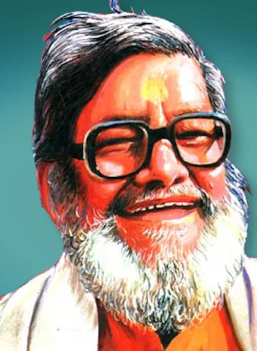

काका हाथरसी का जन्म (18 सितम्बर 1906 - 18 सितम्बर 1995) को हाथरस में हुआ, वे हिंदी व्यंग्य के मूर्धण्य कवि थे। उनकी शैली की छाप उनकी पीढ़ी के अन्य कवियों पर तो पड़ी ही, आज भी अनेकों लेखक और व्यंग्य कवि काका की रचनाओं की शैली अपनाकर लाखों श्रोताओं और पाठकों का मनोरंजन कर रहे हैं।
व्यंग्य का मूल उद्देश्य लेकिन मनोरंजन नहीं बल्कि समाज में व्याप्त दोषों, कुरीतियों, भ्रष्टाचार और राजनीतिक कुशासन की ओर ध्यान आकृष्ट करना है। ताकि पाठक इनको पढ़कर बौखलाये और इनका समर्थन रोके। इस तरह से व्यंग्य लेखक सामाजिक दोषों के ख़िलाफ़ जनमत तैयार करता है और समाज सुधार की प्रक्रिया में एक अमूल्य सहयोग देता है। इस विधा के निपुण विद्वान थे काका हाथरसी, जिनकी पैनी नज़र छोटी से छोटी अव्यवस्थाओं को भी पकड़ लेती थी और बहुत ही गहरे कटाक्ष के साथ प्रस्तुत करती थी।

सीधी नजर हुयी तो सीट पर बिठा गए।
टेढी हुयी तो कान पकड कर उठा गये।
सुन कर रिजल्ट गिर पडे दौरा पडा दिल का।
डाक्टर इलेक्शन का रियेक्शन बता गये ।
अन्दर से हंस रहे है विरोधी की मौत पर।
ऊपर से ग्लीसरीन के आंसू बहा गये ।
भूंखो के पेट देखकर नेताजी रो पडे ।
पार्टी में बीस खस्ता कचौडी उडा गये ।
जब देखा अपने दल में कोई दम नही रहा ।
मारी छलांग खाई से “आई“ में आ गये ।
करते रहो आलोचना देते रहो गाली ।
मंत्री की कुर्सी मिल गई गंगा नहा गए ।
काका ने पूछा 'साहब ये लेडी कौन है ।
थी प्रेमिका मगर उसे सिस्टर बता गए।।
फादर ने बनवा दिये तीन कोट, छै पैंट,
लल्लू मेरा बन गया कालिज स्टूडैंट।
कालिज स्टूडैंट, हुए होस्टल में भरती,
दिन भर बिस्कुट चरें, शाम को खायें इमरती।
कहें काका कविराय, बुद्धि पर डाली चादर,
मौज कर रहे पुत्र, हडि्डयां घिसते फादर।
पढ़ना–लिखना व्यर्थ हैं, दिन भर खेलो खेल,
होते रहु दो साल तक फस्र्ट इयर में फेल।
फस्र्ट इयर में फेल, जेब में कंघा डाला,
साइकिल ले चल दिए, लगा कमरे का ताला।
कहें काका कविराय, गेटकीपर से लड़कर,
मुफ़्त सिनेमा देख, कोच पर बैठ अकड़कर।
प्रोफ़ेसर या प्रिंसिपल बोलें जब प्रतिकूल,
लाठी लेकर तोड़ दो मेज़ और स्टूल।
मेज़ और स्टूल, चलाओ ऐसी हाकी,
शीशा और किवाड़ बचे नहिं एकउ बाकी।
कहें 'काका कवि' राय, भयंकर तुमको देता,
बन सकते हो इसी तरह 'बिगड़े दिल नेता।'
भोलू तेली गाँव में, करै तेल की सेल
गली-गली फेरी करै, 'तेल लेऊ जी तेल'
'तेल लेऊ जी तेल', कड़कड़ी ऐसी बोली
बिजुरी तड़कै अथवा छूट रही हो गोली
कहँ काका कवि कछुक दिना सन्नाटौ छायौ
एक साल तक तेली नहीं गाँव में आयो
मिल्यौ अचानक एक दिन, मरियल बा की चाल
काया ढीली पिलपिली, पिचके दोऊ गाल
पिचके दोऊ गाल, गैल में धक्का खावै
'तेल लेऊ जी तेल', बकरिया सौ मिमियावै
पूछी हमने जे कहा हाल है गयौ तेरौ
भोलू बोलो, काका ब्याह है गयौ मेरौ
सारे जहाँ से अच्छा है इंडिया हमारा
हम भेड़-बकरी इसके यह गड़ेरिया हमारा।
सत्ता की खुमारी में, आज़ादी सो रही है
हड़ताल क्यों है इसकी पड़ताल हो रही है
लेकर के कर्ज़ खाओ यह फर्ज़ है तुम्हारा
सारे जहाँ से अच्छा है इंडिया हमारा।
चोरों व घूसखोरों पर नोट बरसते हैं
ईमान के मुसाफिर राशन को तरशते हैं
वोटर से वोट लेकर वे कर गए किनारा
सारे जहाँ से अच्छा है इंडिया हमारा।
जब अंतरात्मा का मिलता है हुक्म काका
तब राष्ट्रीय पूँजी पर वे डालते हैं डाका
इनकम बहुत ही कम है होता नहीं गुज़ारा
सारे जहाँ से अच्छा है इंडिया हमारा।
हिन्दी के भक्त हैं हम, जनता को यह जताते
लेकिन सुपुत्र अपना कांवेंट में पढ़ाते
बन जाएगा कलक्टर देगा हमें सहारा
सारे जहाँ से अच्छा है इंडिया हमारा।
फ़िल्मों पे फिदा लड़के, फैशन पे फिदा लड़की
मज़बूर मम्मी-पापा, पॉकिट में भारी कड़की
बॉबी को देखा जबसे बाबू हुए अवारा
सारे जहाँ से अच्छा है इंडिया हमारा।
जेवर उड़ा के बेटा, मुम्बई को भागता है
ज़ीरो है किंतु खुद को हीरो से नापता है
स्टूडियो में घुसने पर गोरखा ने मारा
सारे जहाँ से अच्छा है इंडिया हमारा।